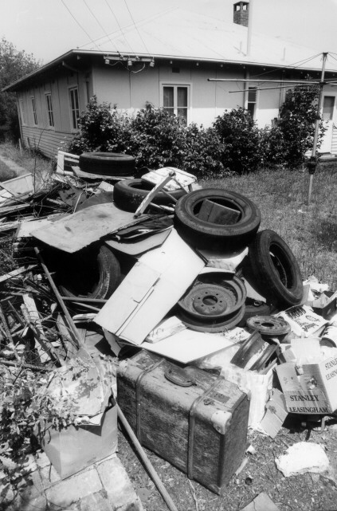

Introduction
The Tocumwal Archive is a collection of stories and photographs, about living in the houses that were moved from the Tocumwal air force base in New South Wales, to the Canberra suburb of O'Connor. The base was built during the Second World War as an inland defence against Japanese invasion. As camouflage, the sleeping quarters for air force personnel were built in the form of houses. After the War, the acute housing shortage in Canberra gave the houses a new purpose.
From the late 1940s, about 200 of them were transported to the growing suburbs of Ainslie and O'Connor. In O'Connor they were located in two groups of four cul-de-sacs meeting at a central park and bounded by Macarthur, Macpherson, Miller and Tate Streets. The area is listed as an Australian Capital Territory (ACT) heritage precinct. Collection for the Archive began in 1996 with a PhotoAccess project supported by the ACT Heritage Council. Stories and photographs are archived according to the donor's name. Ongoing community collection and maintenance of the Archive is encouraged. The Archive is open for research use and the contribution of material at the ACT Heritage Library in the Woden Town Library.
Heritage Listing
Statement of Signifigance
The Tocumwal Housing Precinct in O'Connor is significant as an outstanding example of low cost pre-fabricated housing, which was constructed in Canberra after World War 2. As part of the Government's solution to the critical housing shortage being experienced in Canberra at the time, many of the houses originally constructed at Tocumwal in NSW for the US Army Air Corps were re-erected in the ACT. The cottages are of distinctive design types and limited geographically to the O'Connor Precinct and a small area in Ainslie. The Precinct remains the most intact example of this style of housing and is unique in Canberra for its urban planning, landscaping and social history. The eight culs de sac evident in the precinct share access onto a community recreation area with the individual identity of each street reinforced by the street plantings. Many of the cottages retain their original hedge plantings. The 'precinctual' planning is thus significant. The sense of cohesion of the streetscapes within the Precinct is achieved by the repetition of features in the housing stock, and the integration of this with unifying street plantings and hedges. It creates an area of high aesthetic value.
Features Intrinsic To The Heritage Significance Of The Place
The place comprises:
- a) The extant ‘Tocumwal’ houses on blocks identified in Figure 43 (affected properties listed in Schedule 1);
- b) The existing subdivision pattern;
- c) The road layout including the culs de sac and their streetscapes; and
- d) The public open spaces contained within the Precinct.
Gallery
